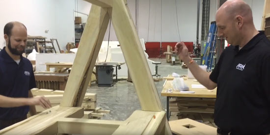

1. Animal Water Delivery — Rotating Vessel vs Valve
Original Design (Author)
A rotating vessel water delivery system — the ancient and proven chicken drinker principle:
| Element | Description |
|---|---|
| Vessel | Inverted container filled with water, open at base |
| Trough | Shallow trough below the vessel opening |
| Mechanism | Animal drinks from trough → water level drops → air enters vessel → water flows by gravity to restore level → cycle repeats |
| Moving parts | None — gravity and atmospheric pressure only |
| Failure modes | None beyond physical damage to vessel |
| Crew operation | None — refill vessel periodically from header tank above |
| Historical precedent | Chicken drinker design used continuously for centuries — proven reliable at scale |
| Vessel motion tolerance | Excellent — system self-regulates regardless of orientation within normal roll angles |
Ark Encounter Modification
The rotating vessel was replaced with a stationary drum with a valve controlling water flow — apparently for visual clarity in the exhibition context (attributed to artistic direction, possibly Travis Wilson).
Engineering Problem with the Valve System
The valve system introduces a critical failure mode absent from the original design:
A single leaking valve that allows water to drain from a cage, or a stuck valve that prevents water reaching an animal, could kill the occupants. With thousands of valves operating for 371 days in a pre-industrial timber and bronze construction, the probability of at least one failure approaches certainty.
The rotating vessel system has no valves. It cannot fail through valve malfunction. The only failure mode is physical damage to the vessel itself — visible, immediately obvious, and trivially repaired with pitched fabric and a replacement vessel.
The Correct System
| Property | Rotating vessel (original) | Valve system (AE) |
|---|---|---|
| Moving parts | None ✓ | Valve mechanism ✗ |
| Failure modes | Physical damage only ✓ | Valve leak, valve stuck, valve corrosion ✗ |
| Crew operation | Periodic refill only ✓ | Valve inspection/maintenance ✗ |
| Vessel motion tolerance | Excellent ✓ | Dependent on valve orientation ✗ |
| Pre-industrial feasibility | Proven technology ✓ | Requires precision manufacture ✗ |
| Self-regulating | Yes — animal controls its own supply ✓ | No — valve must be correctly set ✗ |
2. Hydroponic Plant Stand — Static Test on a Ship
The Ark Encounter System
A hydroponic plant stand with a shallow-angle gravity-fed watering channel — water flows along channels at a slight gradient, delivering moisture to plant roots by gravity flow. Tested with a marble on a stationary floor to confirm the gradient was sufficient for flow. Test result: marble rolled along channel. ✓
The Engineering Problem
The test was conducted on a stationary floor. The Ark is not stationary.
The Marble Test Problem

Marbles used to test a gentle slope for water drainage on a raised plant growing rack on board the (rocking!) Ark.
Testing a gravity-fed system with a marble on a stationary floor confirms only that the gradient exists. It says nothing about system behaviour when the floor tilts ±8° every 22 seconds for 371 days. This is a fundamental test methodology error — the test environment does not represent the operating environment.
Correct Solutions
| System | Vessel motion tolerance | Notes |
|---|---|---|
| Wicking/capillary system | Excellent — capillary action independent of orientation | Proven technology, simple construction, passive |
| Individual pot trays with drainage | Good — each pot self-contained | Water retained in pot regardless of vessel angle |
| Deep substrate beds | Good — soil retains moisture through roll cycles | The promenade planting strip already specified this way |
| Vertical tower growing | Moderate — depends on orientation | Needs motion analysis |
| Shallow gravity channel | Poor ✗ | AE system — fails in any seaway |
Proposed Exhibit Enhancements
The following enhancements would strengthen the Ark Encounter's communication of the naval architecture and construction methodology — areas where the current exhibits leave visitor questions unanswered.
Enhancement 1 — Entry Door: Overhead Hull Section
The current entry door area is a missed opportunity. Visitors walk through a large opening in the hull without understanding what they are passing through.
Proposed: fill the entry door void with an overhead sectioned display of the hull planking system — viewed from directly below as visitors enter. The display would show:
- Each planking layer clearly distinguished — five layers of 5-inch planking, outer two sacrificial, inner three mortise-and-tenon edge jointed
- The pegs (trunnels), tenons, and spike elements traced through the layers, showing how they connect
- Left and right sides integrated into a single overhead cross-section — showing the hull as a unified structural system, not two independent walls
- Lighting from above to make the layers readable as visitors pass beneath
This gives every visitor an immediate tactile understanding of the hull system before they enter — setting up everything they will see inside.
Enhancement 2 — Bronze Strapping Section Using "Noah Techniques"
The Ark Encounter's structural system uses modern engineered timber — glulam, LVL — on concrete foundations. This is entirely appropriate for a public building but leaves visitors without any understanding of how the original vessel was actually built.
Proposed: build a demonstration section of hull using authentic pre-industrial construction techniques:
- Laminated timber planking with mortise-and-tenon edge joints
- Bronze strapping at frame connections — the technology available to a pre-flood civilisation with Tubal-Cain's metalworking tradition
- Steel drift bolts (the closest modern equivalent to what forged iron could achieve) through the hull layers
- Trunnel (wooden peg) fastenings throughout
- Kopher pine resin coating — or the closest available equivalent
This section would show not just what the hull looked like but how it was put together — the actual construction system that made a 157m timber vessel feasible.
Enhancement 3 — Touch and Feel Hull Section
Most visitors have no intuitive sense of how thick the hull is. Reading "2.25 metres of timber" means nothing without physical experience.
Proposed: a free-standing section of hull at approximately 1:1 scale, in an open area visitors can walk around and touch:
- Full thickness — all five planking layers plus ceiling strakes, approximately 2.25m total
- One face showing the outer hull — keel, sacrificial planking, kopher coating
- The opposite face showing the interior ceiling — ceiling strakes, ring bolts, frame blocking
- A cut-away section showing all layers in cross-section with labels
- Interactive elements — a trunnel to push, a mortise-and-tenon joint to feel, the weight of a planking layer to appreciate
The hull is the most important engineering element of the Ark and currently the least understood by visitors. A touch section would change that immediately.
Enhancement 4 — To Be Added
Placeholder — further enhancement to be specified.
Engineering Corrections — Documented Issues
| Topic | Issue | Status |
|---|---|---|
| Hull form | AE hull is a static building — no weathervaning, no bilge keels, no outboard keels. Fine for a museum, wrong for seakeeping analysis. | To develop |
| Interior layout | Three longitudinal public corridors vs single functional promenade — see Cubit Analysis beam argument | Documented ✓ |
| Ramp system | AE ramps designed for public visitor flow — angle, width and frequency differ from operational animal loading ramps | To develop |
| Ventilation | AE uses modern HVAC — ṣohar passive ventilation system not demonstrated | To develop |
| Structural system | AE uses modern engineered timber (glulam, LVL) on concrete foundations — not representative of ancient laminated timber construction | To develop |